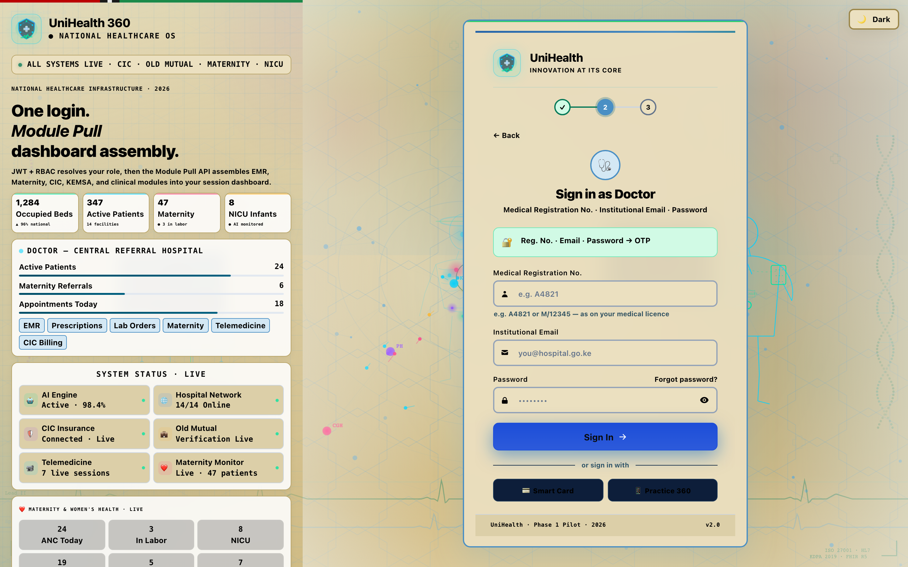
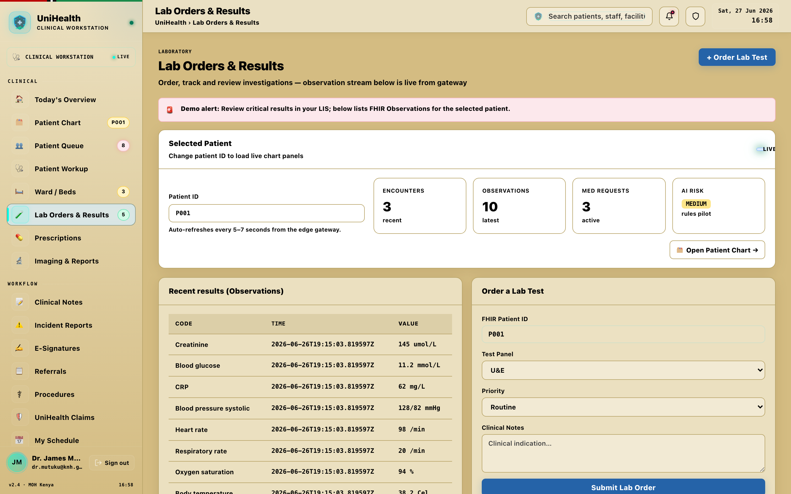
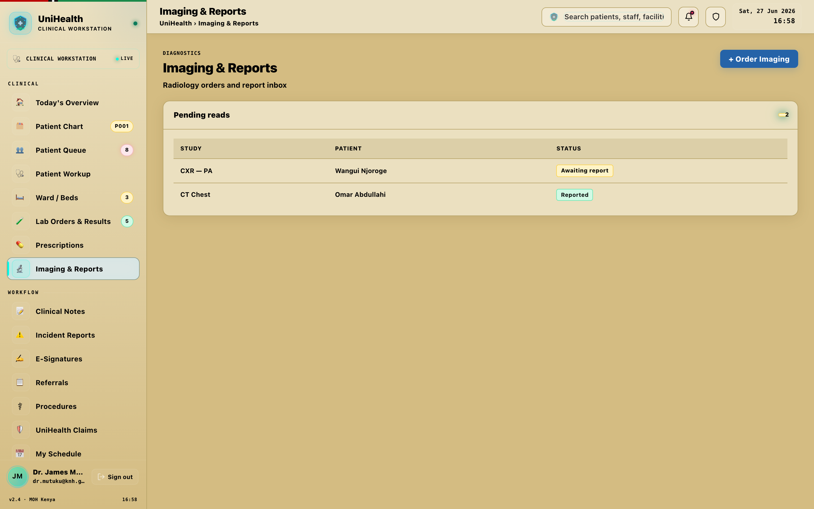
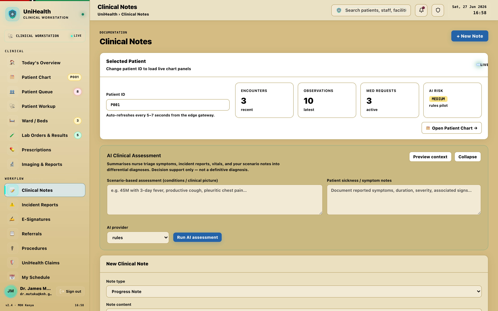
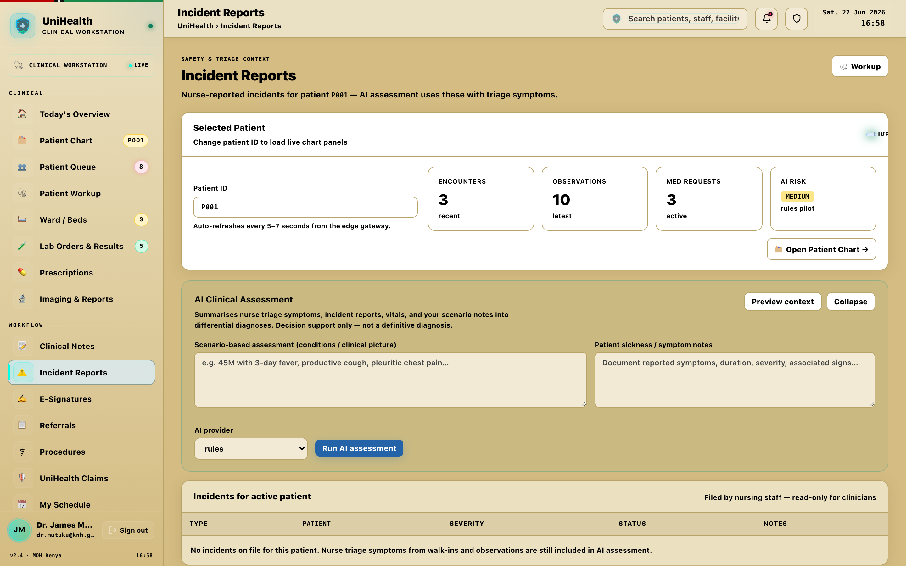
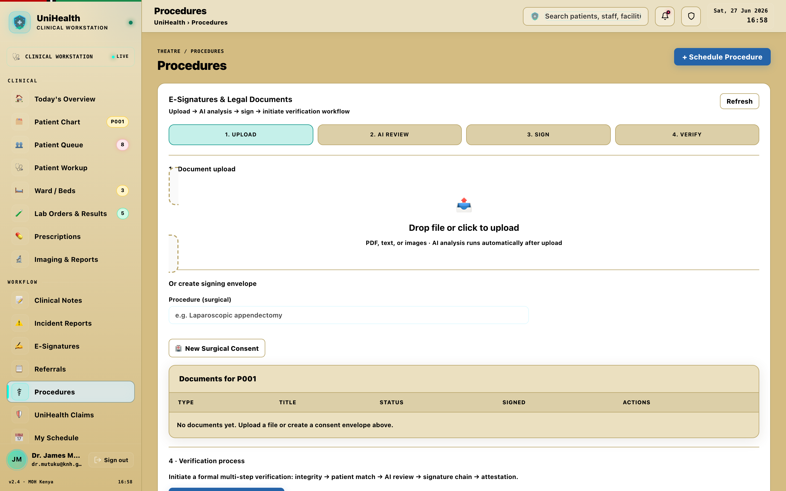
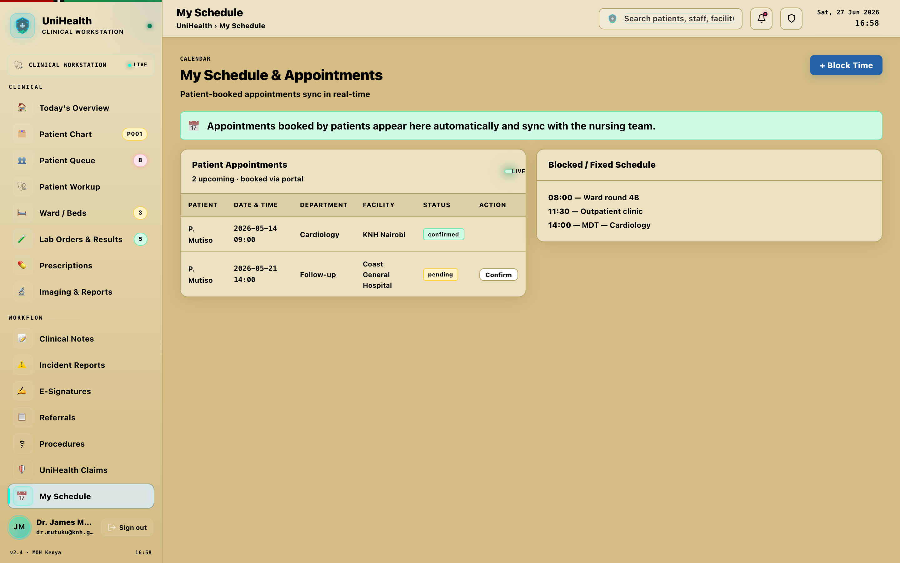
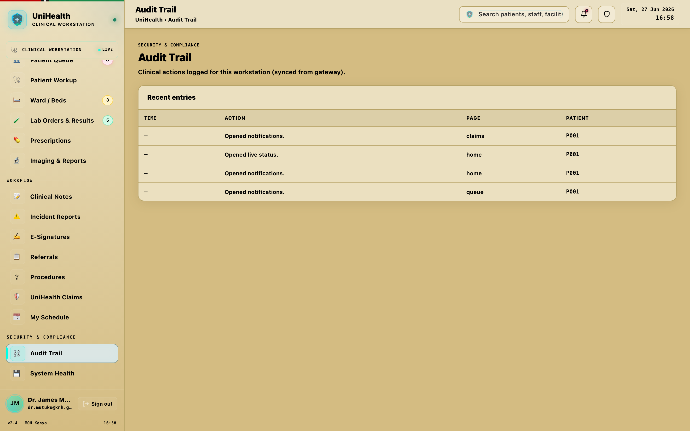
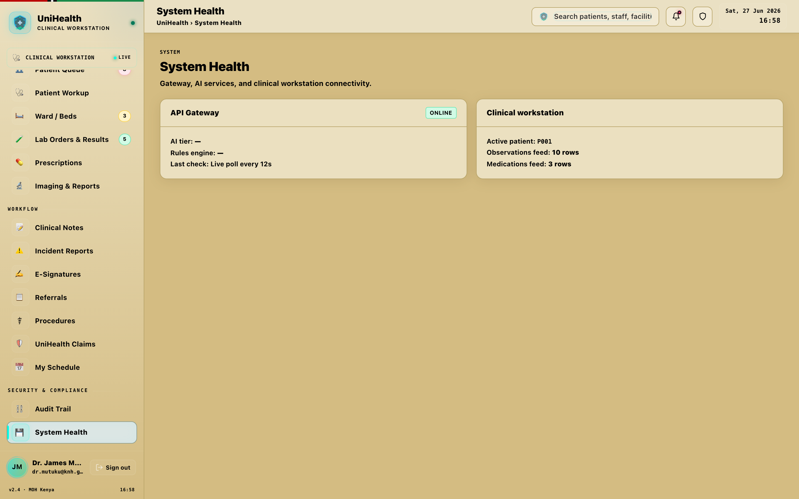

Doctor Dashboard Manual
Sign-in, navigation, and every clinical workstation tab — with annotated screenshots.
1. Sign-in — Doctor
Doctors use the four-step staff sign-in: select role → credentials → MFA → launch dashboard.
Step 1 — Select role
The Doctor tile is highlighted in the role carousel. The audit panel logs authentication events for compliance.

The Doctor tile is highlighted in the role carousel. The audit panel logs authentication events for compliance.
Step 2 — Enter credentials
Enter Medical Registration No. (e.g. A4821), institutional email, and password. Policy requires uppercase, numbers, and ≥8 characters.

Enter Medical Registration No. (e.g. A4821), institutional email, and password. Policy requires uppercase, numbers, and ≥8 characters.
Step 3 — Verify MFA
Enter the six-digit OTP sent to your institutional email. In staging/demo, use Practice 360 or OTP 123456.

Enter the six-digit OTP sent to your institutional email. In staging/demo, use Practice 360 or OTP 123456.
Step 4 — Launch dashboard
Confirms Doctor — Pilot Hospital A. Session token authorises API calls to the gateway (staging port 8100).

Confirms Doctor — Pilot Hospital A. Session token authorises API calls to the gateway (staging port 8100).
2. Dashboard layout
The Clinical Workstation is organised into sidebar sections and a live top bar.
| Zone | Purpose |
|---|---|
| Sidebar — Clinical | Overview, chart, queue, workup, ward, labs, Rx, imaging |
| Sidebar — Workflow | Notes, incidents, e-sign, referrals, procedures, claims, schedule |
| Sidebar — Admin | Audit trail and system health |
| Top bar | Page title, patient context, search, notifications |
3. Clinical tabs
Today's Overview

Shift command centre: KPIs, AI alerts, ward badges. Polls every 5–8s when API is live.
Patient Chart

Longitudinal record: demographics, allergies, conditions, medications, observations.
Patient Queue

Outpatient waiting list with triage priority. Select a row to set the active patient.
Patient Workup

Structured assessment, AI risk score (pilot), clinical AI panel, and e-sign links.
Ward / Beds

Inpatient bed map, occupancy status, and ward capacity forecast.
Lab Orders & Results

Place lab orders and review results; critical values per local protocol.
Prescriptions

Compose medication orders — drug, dose, route — sent to pharmacy queue.
Imaging & Reports

Request radiology studies and track report status.
4. Workflow tabs
Clinical Notes

Progress, admission, discharge, and procedure notes — audit-logged on save.
Incident Reports

Patient-linked incident reports for governance and quality.
E-Signatures

Upload → AI Review → Sign → Verify document pipeline.
Referrals

Inter-facility referrals with hospital, department, and patient pickers.
Procedures

Log planned or completed procedures; links to e-sign consent.
UniHealth Claims

Insurance and cover claims initiation and tracking.
My Schedule

Clinic blocks and theatre slots for the week.
5. Admin & system tabs
Audit Trail

Live UI action feed from /ui/actions for compliance review.
System Health

AI tier, rules engine, and gateway connectivity status.
6. Tips & troubleshooting
Recommended workflow
- Sign in and complete MFA.
- Review Today's Overview for KPIs and alerts.
- Work Patient Queue — set active patient per consult.
- Document in Clinical Notes; order labs, imaging, and Rx as needed.
- Check System Health if panels show offline data.
Common issues
| Issue | Action |
|---|---|
| Blank panels / Failed to fetch | Start ./scripts/run_staging.sh; hard-refresh; verify Vite proxy → :8100 |
| AI risk unavailable | System Health tab; verify /ai/risk-score endpoint |
| E-sign upload fails | Disable ad-blockers; API path is /esign not /legal |
| Wrong patient in orders | Re-select from queue or ward first |